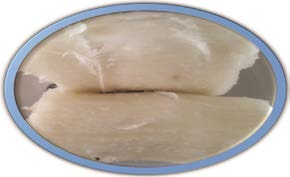
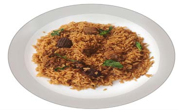
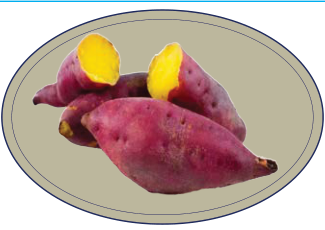
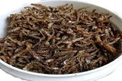
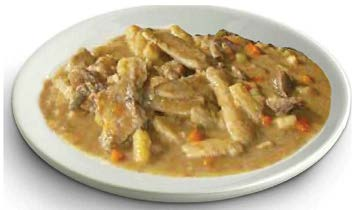
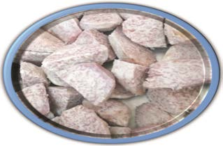

(e)
(f)
(g)
(h)
(i)
(j)
Exercise 1
1. What kind of foods do you observe in picture (a), (b), (c), (d), (e), (f), (g), (h), (i) and (j)?
2. Mention some spices and vegetables that you eat in various dishes.
3. Mention other foods that you know.